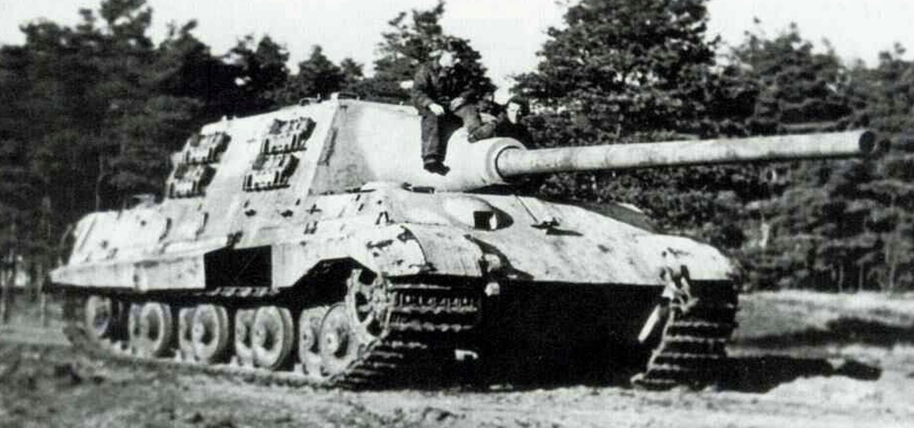

| Spesifikasi | Detail |
|---|---|
| Dimensi (Panjang dengan meriam ke depan) | 10,65 m |
| Dimensi (Panjang Badan Tank) | 7,64 m |
| Lebar | 3,76 m |
| Tinggi | 2,80 m |
| Berat | Sekitar 71,7 - 76 ton (tergantung varian) |
| Awak | 6 orang (Pengemudi, Komandan, Penembak, 2 Pengisi Peluru, Operator Radio/MG) |
| Lapisan Baja (Superstruktur Depan) | 250 mm (miring 2-28°) |
| Lapisan Baja (Glacis Depan) | 150 mm (miring 49°) |
| Lapisan Baja (Sisi Superstruktur & Hull) | 80 mm (miring 26°) |
| Lapisan Baja (Belakang Superstruktur & Hull) | 80 mm (miring 28-29°) |
| Lapisan Baja (Atas Superstruktur & Hull) | 40-50 mm |
| Persenjataan Utama | 1 x meriam 12,8 cm PaK 44 L/55 |
| Persenjataan Sekunder | 1 x senapan mesin 7,92 mm MG 34 (kemudian beberapa dilengkapi MG 42 AA) |
| Mesin | V12 Maybach HL 230 P30 |
| Tenaga Mesin | 700 PS (690 hp, 515 kW) |
| Kecepatan Maksimum | 38 km/jam (di jalan) |
| Jarak Tempuh | Sekitar 120 km (di jalan) |
| Suspensi | Batang torsi |
| Produksi | Sekitar 88 unit |